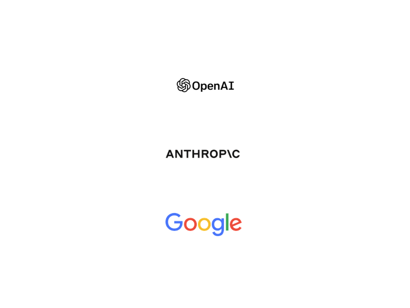
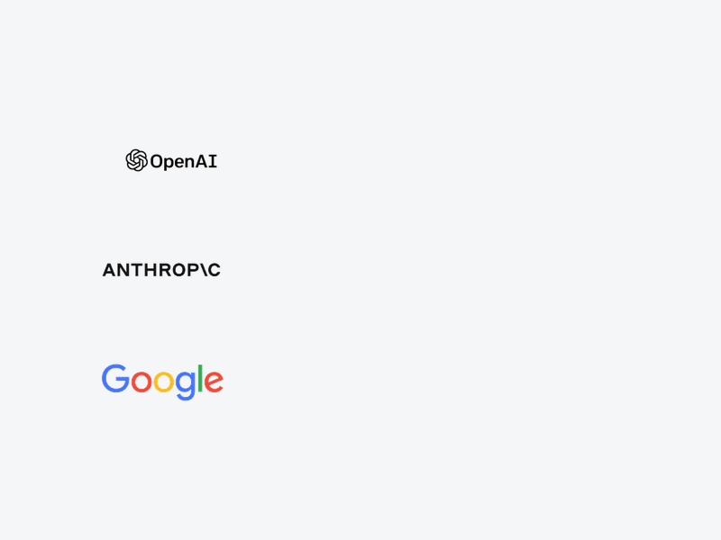
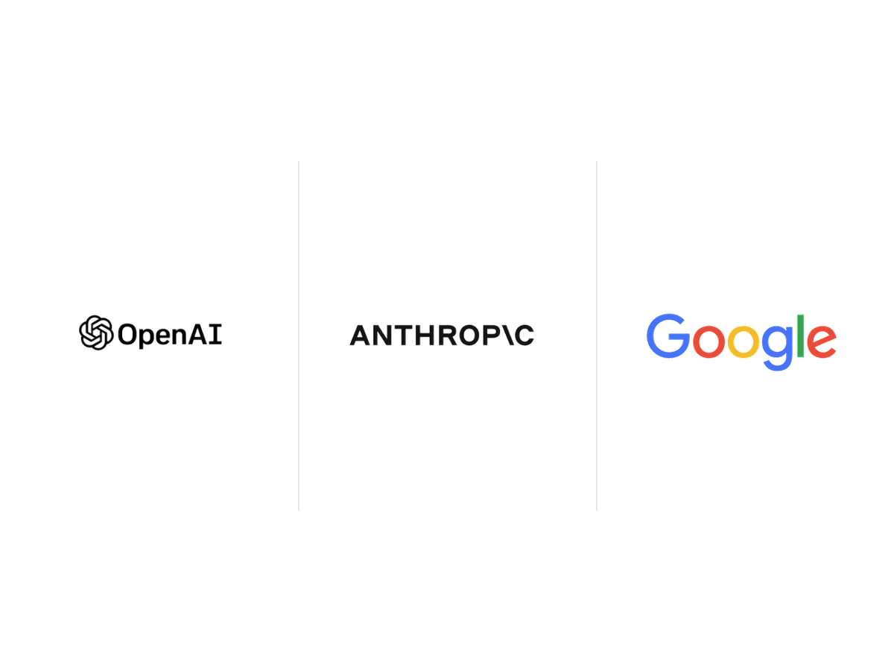

로고 캡쳐의 흰/베이지 배경은 코너 픽셀 기준으로 투명화함 — 로고 자체(색·획·형태)는 미변형. 실제 카드 폭(약 245px) 그대로 시뮬레이션.
가장 미니멀. 시리즈 카드 전체와 동일한 흰 톤. 다른 카드들 사이에서 자연스럽게 섞임.

OpenAI·Anthropic 공식 문서 핵심
캔버스를 #f5f6f8로 살짝 톤 다운. 좌측 정렬이라 카드 중 한 장만 다른 결로 도드라짐. 시선 끌고 싶을 때.

로고를 3등분 칸 안에 배치 + 1px 구분선. "공식 가이드 큐레이션 모음" 느낌이 가장 강함.
